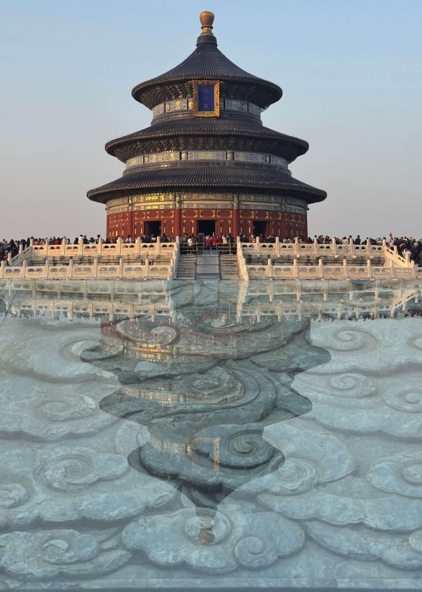
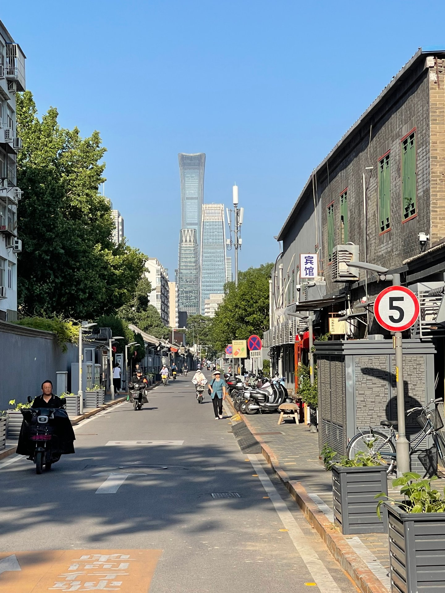
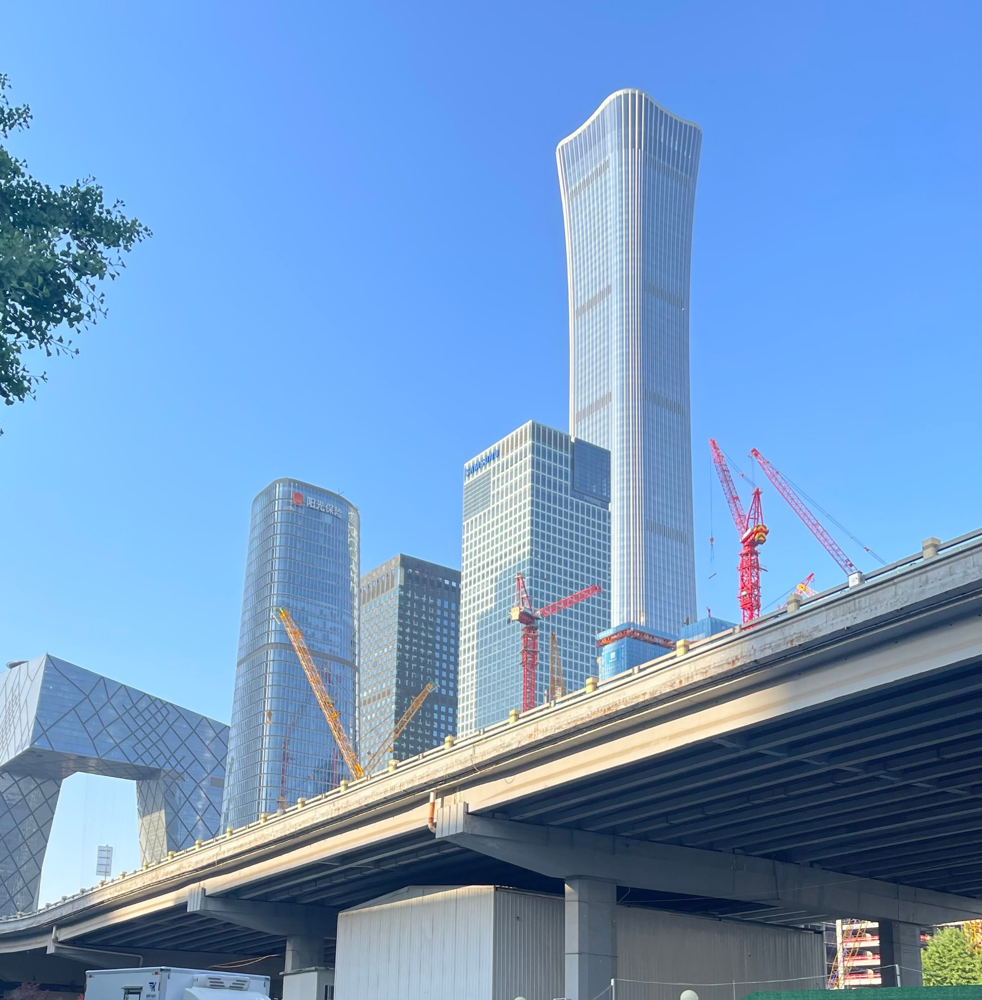
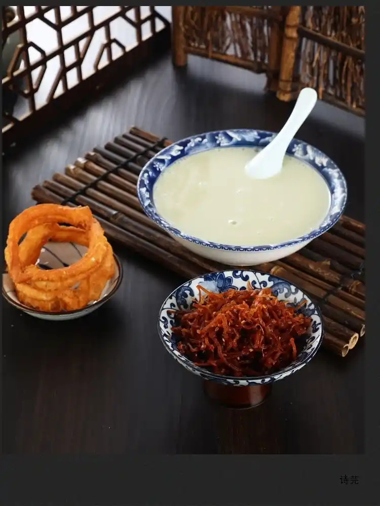
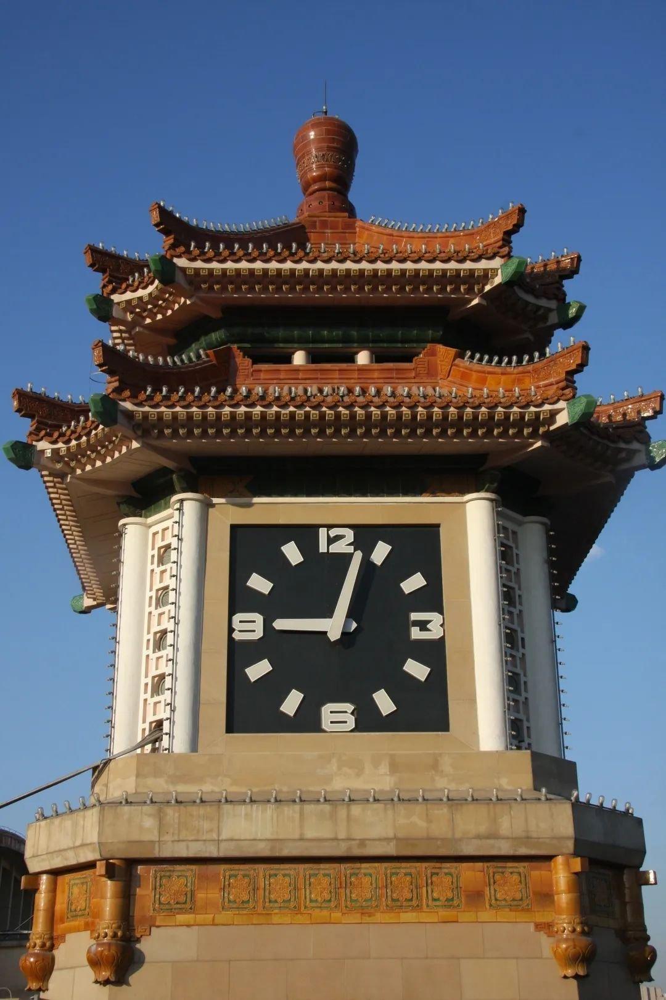
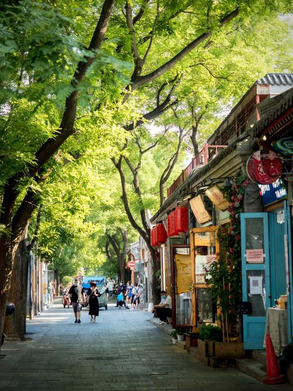
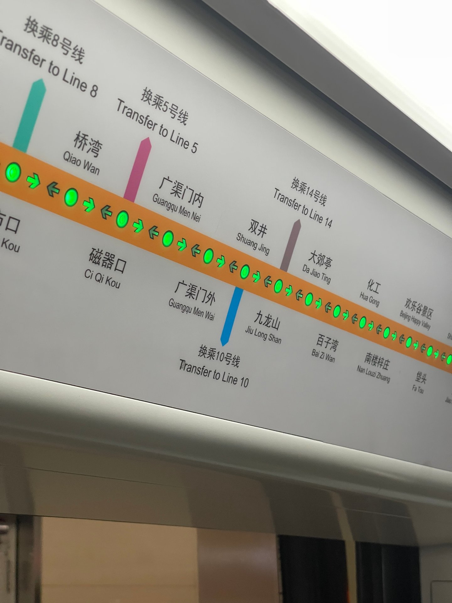
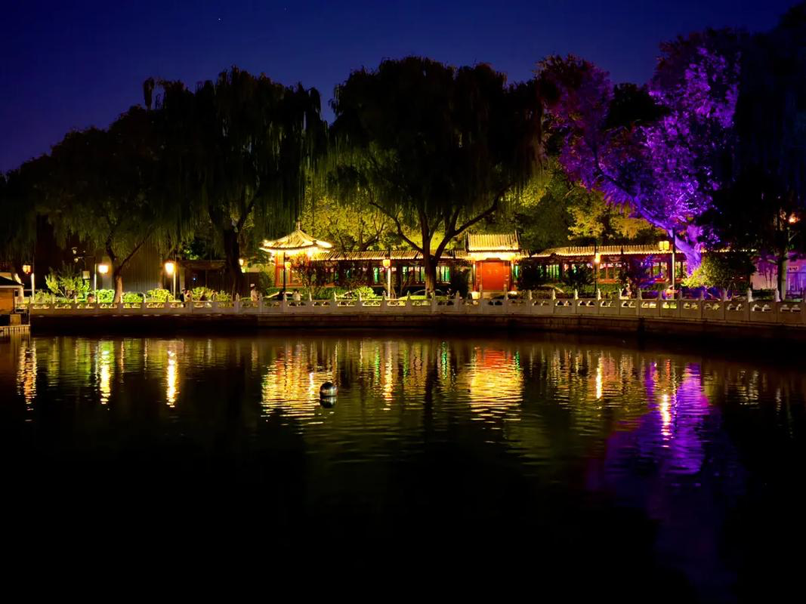

故宫
红墙之内，时间像一层安静的回响。
Beijing / Between Axis and Breath
一条中轴线，延展出古都的秩序；
无数街巷与灯火，构成今天北京的呼吸。
点击后允许播放声音
北京是一座被时间层层叠加的城市。它既有古都的轴线、城门与礼制，也有地铁、写字楼和不断生成的新生活。
从燕国蓟城到今日首都
金、元、明、清的都城
中华人民共和国首都
历史底蕴与创新的交汇
四座地标，四种时间的切片。
红墙之内，时间像一层安静的回响。

北京与天空之间，保留着古老的仪式感。

真正的北京，常常藏在热闹背后的转角里。

玻璃、速度与灯光，构成城市的未来表面。
不写空泛的文化底蕴，只说三个关键词。
中轴线不只是城市结构，也是北京精神的一种可视化表达。从永定门到钟鼓楼，七点八公里的直线，串起了一座古都的礼制与呼吸。
不同口音、身份和梦想在这里相遇，塑造了今天的北京。胡同里的老住户、写字楼里的年轻人、来自各地的追梦者，都在这座城市找到自己的位置。
皇家建筑旁边可以是早餐铺，写字楼不远处也能转进老胡同。这种并置不是混乱，而是一座城市同时容纳不同时间层次的能力。
北京的一天，从热气开始，在风声里慢下来。

豆汁、焦圈、胡同口的早餐铺，城市在热气里醒来。
一碗炸酱面，简单、直接，也很北京。
铜锅涮肉升起白雾，冬天的北京有了温度。
后海的水声、街灯和晚风，让城市慢下来。
Sound Map of Beijing
点击四个卡片，收集四种北京气质。
用耳朵，听见一座城市的呼吸。

故宫、中轴线、古都秩序
钟声 · 古都回响
点击聆听
胡同、街巷、清晨生活
胡同深处 · 街巷人声
点击聆听
CBD、地铁、科技创新
地铁穿行 · 都市节奏
点击聆听
后海、酒吧街、人间烟火
人声鼎沸 · 音乐流转 · 后海夜生活
点击聆听
你已听见一个更完整的北京。
它不只有宏大，也有细小而真实的温度。
如果你还没来过北京，
愿这座城市先以声音和光影与你相遇。
如果你已经来过，
也希望你记得它不只有宏大，
还有耳边真实的响度 与万千回忆。